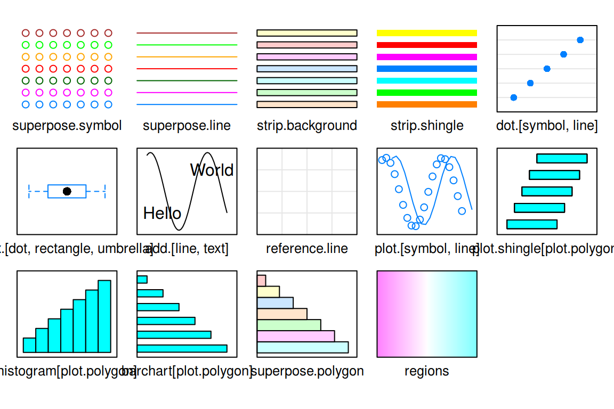
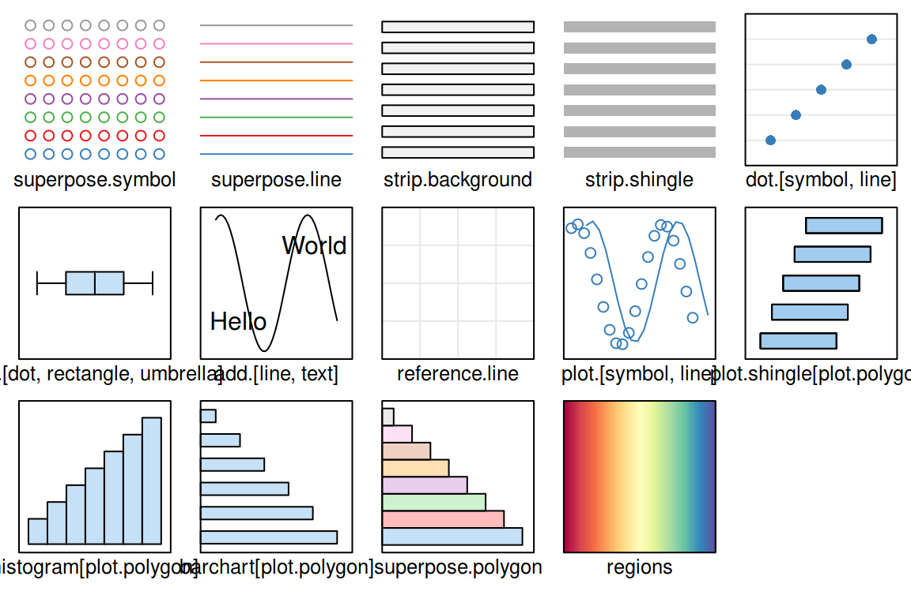
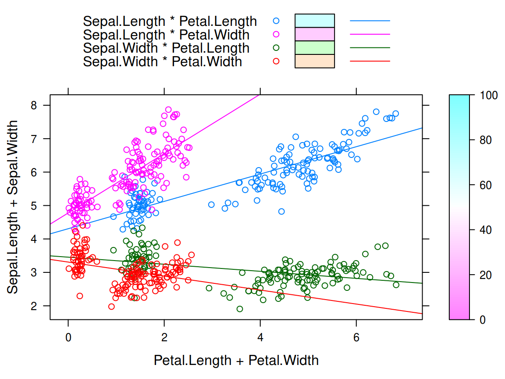
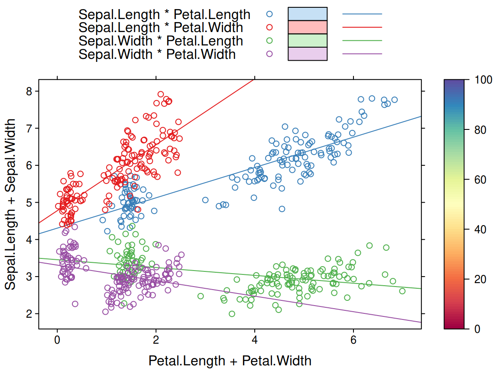

vignettes/tactile-theme.Rmd
tactile-theme.Rmdtactile introduces a new theme for latice that does a few things, namely
We now turn to illustrating the differences. First, we use lattice::show.settings() for an overview over the default settings.
library(tactile)
#> Loading required package: lattice
show.settings()
show.settings(tactile.theme())
Then we plot a sample plot (from http://latticeextra.r-forge.r-project.org/).
set.seed(0)
## create a plot to demonstrate graphical settings
obj <- xyplot(Sepal.Length + Sepal.Width ~ Petal.Length + Petal.Width, iris,
type = c("p", "r"), jitter.x = TRUE, jitter.y = TRUE, factor = 5,
auto.key = list(lines = TRUE, rectangles = TRUE))
obj <- update(obj,
legend = list(right = list(fun = "draw.colorkey",
args = list(list(at = 0:100)))))
## draw with default theme
obj
